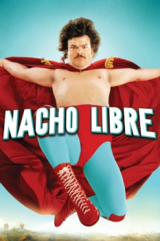

Country:United States, 92 minutes
Spoken languages:Spanish, English
Genres:Comedy, Family
Director(s):Jared Hess
Writer(s):Mike White, Jared Hess, Jerusha Hess
Video Codec:Unknown
Number: 664


Certification:PG
Storyline:
Nacho Libre is loosely based on the story of Fray Tormenta ("Friar Storm"), aka Rev. Sergio Gutierrez Benitez, a real-life Mexican Catholic priest who had a 23-year career as a masked luchador. He competed in order to support the orphanage he directed.
Cast:


Medium: Original DVD,
Loaned: No
Aspect ratio: Unknown